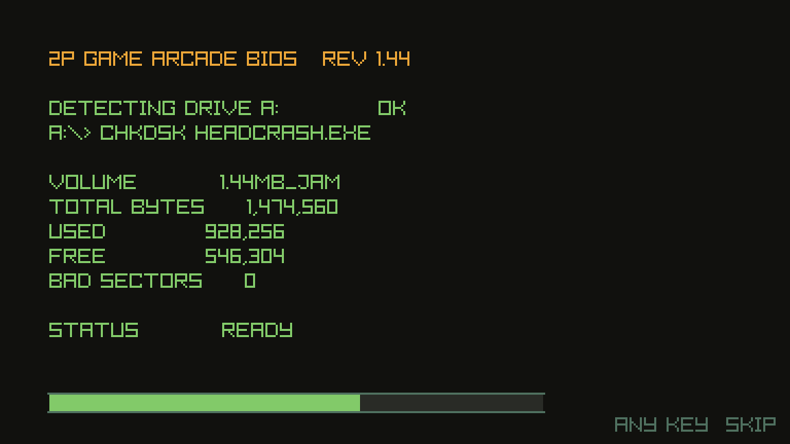

THE FICTION
플로피 한 장. 한 면에 80트랙. 이 건물에서 아직 읽을 수 있는 마지막 디스크.
03:14, 드라이브가 자신이 쓴 적 없는 섹터를 기록했습니다. 03:15에 그 섹터는 아홉 개가 되어 있었습니다. 데이터 어딘가에서 무언가가 스스로를 복제하며 퍼지고 있습니다.
당신은 사람이 아닙니다. 드라이브가 마지막 수단으로 실행하는 복구 루틴이고, 헤드 하나에 도구 다섯, 조작자는 없습니다.
스테이지는 트랙이고, 보스는 무언가로 자라난 배드 클러스터이며, 내려찍기는 말 그대로 헤드 크래시입니다 — 읽기/쓰기 헤드를 플래터에 내리꽂아 섹터를 강제로 청소합니다. 그래서 바닥이 움푹 패였다가 낫고, 그래서 고쳐낸 구획은 그대로 남습니다.
100 스테이지, 열 번째마다 배드 클러스터 하나. 열 마리 모두 수치가 아니라 탄막의 '모양'을 하나씩 가지고 있고, 어떤 패턴에도 설 자리는 반드시 있습니다.
One platter. Eighty tracks a side. The last disk in this building that still reads.
At 03:14 the drive logged a sector it did not write. By 03:15 there were nine. Something in the data is copying itself outward.
You are not a person. You are the repair routine the drive runs when it is out of options — one head, five tools, no operator.
Stages are tracks, bosses are bad clusters that have grown into something, and the dive is a deliberate head crash: you bring the read/write head down on the platter to force the sector clean. That is why the floor takes a dent and then heals, and why a repaired wedge stays repaired.
A hundred stages, with a bad cluster closing every tenth. Each of the ten owns a bullet pattern rather than a stat line, and every pattern has somewhere to stand.
プラッタ一枚。片面80トラック。この建物でまだ読める最後のディスク。
03:14、ドライブは覚えのないセクタを記録しました。03:15、それは九つに増えていました。 データのどこかで何かが自分を複製しながら広がっています。
あなたは人ではありません。ドライブが最後に走らせる修復ルーチン — ヘッド一つ、道具五つ、操作者なし。
ステージはトラック、ボスは何かに育った不良クラスタ、そして急降下は文字どおりの ヘッドクラッシュです。読み書きヘッドをプラッタに叩きつけ、セクタを強引に きれいにします。だから床はへこんで、また戻る — そして 直した区画はそのまま残ります。
100ステージ、十番ごとに不良クラスタが一体。十体はどれも数値ではなく弾幕の「かたち」を 持ち、どのパターンにも必ず立てる場所があります。
